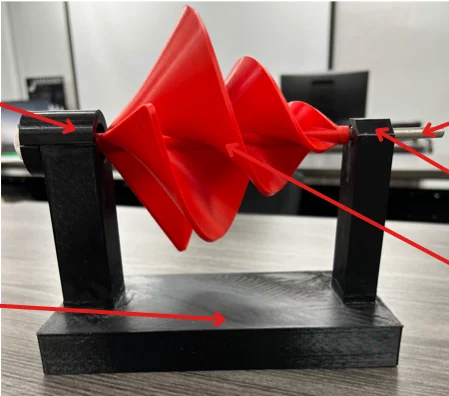
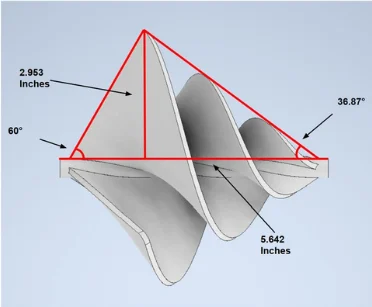
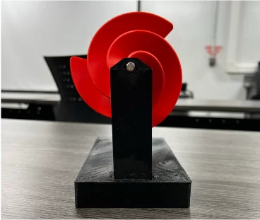

Liam F1 Wind Turbine
A team of five designed, printed, built and tested a small wind turbine for under $100. The final project was presented as a poster.
Project facts
| Course | Engineering Department class project, instructor Dr. Sob |
| Team | Team of five |
| Budget | Under $100 total |
| CAD software | Autodesk Inventor Professional |
| Fabrication | 3D printed blades, base and supports. Other parts ordered online. Assembled with adhesives. |
| Result | Spun smoothly and generated 82.5 to 85.1 V once up to speed |
The goal
Pick a specific turbine to research, design, construct, test and present. Keep the total cost under $100. The turbine has to spin well in minimal wind, generate power, and sit on a stable, good-looking base.
Design
The finished turbine measures 190.852 mm tall including the base, 140.904 mm wide, and just under 304.8 mm (12 in) long. It has six main parts.
| Height | 190.852 mm, including base |
| Width | 140.904 mm |
| Length | Just under 304.8 mm |
| Parts | Blade, Base, Shaft, Motor (generator), One-way bearing, Adaptor |



How it was built
- ResearchChose the turbine and studied how it works.
- DesignModeled the blade, supports and base in Inventor.
- OrderingBought the one-way bearings, shaft and other parts online.
- AssemblyPrinted parts joined with adhesives.
- TestingMeasured the voltage once the blade was up to speed.
After the first build the turbine spun smoothly, so the team made small cosmetic changes to finish the prototype.
Testing results
Voltages are the values recorded on the team poster.
What we changed and what we would change
Innovation
The original idea used standard bearings plus a brake to control which way the shaft turns. One-way bearings do that job on their own, so the brake was not needed. That cut the number of parts, the complexity and the cost.
Recommendations
- Use a round axle instead of a D-shaped one. The D shape added friction and lost energy at the bearings.
- Use mechanical connectors and dedicated attachment points instead of adhesive. The base and supports needed a lot of glue.
- Make the axle and blades lighter to improve efficiency.
Future work
Collect and document more data, including tests in real-world environments and different wind conditions.
What I took from it
The blade worked and produced power. We also found plenty to improve in the structure. This was a hands-on look at the whole path from a CAD model to a tested part.